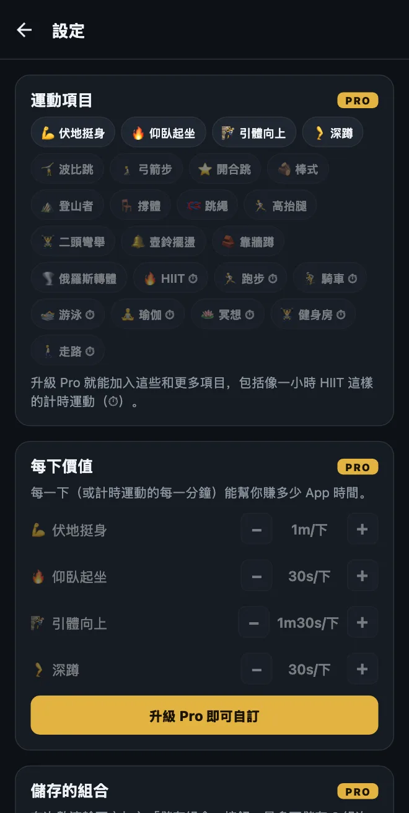
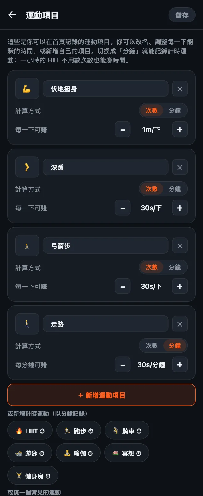

HonorFit 怎麼自訂運動項目
嗨大家好！HonorFit 一開始是我做給自己用的伏地挺身 App 封鎖工具（英文）：IG 會一直鎖著，直到我做完一些伏地挺身，而且是用誠實制（英文）自己記錄（不用鏡頭）。內建有四種運動：伏地挺身、仰臥起坐、引體向上和深蹲。
不過不是每個人都想做伏地挺身。也許你的手腕很討厭它，也許你比較想做波比跳，也許你今天已經跑了 8 公里，想讓這個也算數。很合理！所以這些全部都可以改。下面是詳細的做法，還有哪些免費、哪些需要 Pro。
哪些免費、哪些是 Pro
先老實說：改運動項目是 Pro 功能。免費版就是內建的四種運動，數值如下：
| 運動項目 | 每一下可賺（預設） |
|---|---|
| 💪 伏地挺身 | 1 分鐘 |
| 🔥 仰臥起坐 | 30 秒 |
| 🧗 引體向上 | 1 分 30 秒 |
| 🦵 深蹲 | 30 秒 |
免費版每個滾輪一組最多 20 下，一次最多可以存 20 分鐘。封鎖、記錄和統計永遠免費。
Pro 是每月 3 美元，或一次買斷 19.99 美元（這是美國的價格，各國價格和幣別不同，商店會以你當地的幣值顯示）。它可以讓你新增、改名和刪除運動項目，調整每一下能賺多少時間，用分鐘記錄計時運動，滾輪一組可以到 100 下，還會拿掉 20 分鐘的上限。Pro 還有其他功能，不過這篇只講運動項目。

1. 打開運動項目編輯畫面
- 在首頁點右上角的齒輪，打開「設定」。
- 點最上面的運動項目卡片。
每個運動項目都有一張卡片。在這裡改的東西，要等你點右上角的儲存才會生效，所以儘管隨便點點看。沒儲存就離開的話，什麼都不會變。

2. 幫運動項目改名或換表情符號
點一下名稱，想打什麼就打什麼。如果你實際做的是跪姿或扶牆的版本，「伏地挺身」可以改成「跪姿伏地挺身」或「扶牆伏地挺身」。要換圖示的話，點左邊的表情符號方塊，從清單裡挑一個（大概有 40 個跟健身有關的）。
小提醒：內建的運動名稱會跟著 App 的語言，所以手機設成英文的話，「深蹲」就會顯示成英文。一旦你改了名，就會照你打的字顯示。
3. 設定每一下能賺多少螢幕使用時間
每個運動項目下面都有每一下可賺，旁邊有 − 和 + 按鈕。每點一下會增減 5 秒，最低到 5 秒。所以你可以讓波比跳一下值 1 分 30 秒、開合跳一下值 10 秒，你覺得公平就好。
你也可以不打開編輯畫面，只改數值：「設定」裡運動項目卡片正下方有一個每下價值區塊，有一樣的 −/+ 按鈕。
4. 新增運動項目
有兩種方式：
- 點「＋ 新增運動項目」。會多一張叫「新運動項目」的卡片，每一下 30 秒。幫它改名、設定數值就好。
- 點建議項目。按鈕下面有一排常見的運動，點一下就能加入：波比跳、弓箭步、開合跳、棒式、登山者、撐體、跳繩、高抬腿、二頭彎舉、壺鈴擺盪、靠牆蹲和俄羅斯轉體。這些一樣從每一下 30 秒開始。加入之後，它就會從建議清單裡消失。
每個運動項目在首頁都會有自己的滾輪，所以我建議維持在四個左右。再多的話，你就得滑來滑去找你要的那個。
5. 記錄計時運動（用分鐘，不用次數）
這是我最常被問到的。有些運動本來就不是用次數算的：散步、一堂瑜伽課、跑步、在健身房待一小時。每張卡片都有一個計算方式：次數 | 分鐘的切換。切到分鐘，那個滾輪就會改成算分鐘，數值也會變成每分鐘可賺。
也有點一下就能加入的計時建議（會有 ⏱ 標示）：HIIT、跑步、騎車、游泳、瑜伽、冥想、健身房和走路。
新的計時運動從每分鐘 30 秒開始，所以做一小時 HIIT 可以賺到 30 分鐘的 App 時間。注意一下：當你把運動項目在次數和分鐘之間切換時，數值會重設成 30 秒，因為「每下 1 分鐘」和「每分鐘 1 分鐘」差很多。切換之後再重新設定一次就好。
滾輪是以整分鐘計算，所以 30 秒的棒式不太適合用分鐘。像這種撐住不動的運動，我會建議維持在次數，自己決定一下代表什麼（例如撐 20 秒算一下）。
6. 刪除，或是重新開始
- 點卡片上的 ✕ 就能刪除那個運動項目。至少要留一個。
- 最下面的恢復預設會把原本的四種運動和原本的數值放回來。跟這裡其他操作一樣，要點「儲存」才會生效。
我會怎麼設定數值
這個數值就是你的 App 的「價格」，所以目標是一個你真的會老實付，而不是想辦法灌水的價格。幾個出發點：
- 越難的動作賺越多。引體向上和波比跳 1 分 30 秒，伏地挺身 1 分鐘，深蹲和弓箭步 30 秒。
- 計時運動大概一半。每分鐘 30 秒的話，走路 20 分鐘可以換 10 分鐘滑手機。如果走路是你最想養成的習慣，可以調到每分鐘 1 分鐘。
- 發現自己在灌水，就把價格降低（把每下的價值調高）。這是我在誠實制下的規則。會記下沒做的次數，代表價格不對，不是你不行。
- 困難模式（Pro）可以用首頁上方的一個按鈕，把所有數值砍半，想讓今天難一點又不想一個一個改的時候很好用。
如果想要具體的設定點子，我另外寫了兩篇：用凱格爾運動和臀橋來解鎖，還有不適合做伏地挺身時的低衝擊運動。
HonorFit Blocker 是 iPhone 和 Android 上的免費 App 封鎖工具。誠實制、不用鏡頭，資料都不會離開你的手機。自訂運動項目包含在 Pro 裡。它不是適合每個人，但也許你們有些人會喜歡它！